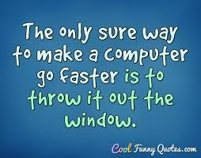
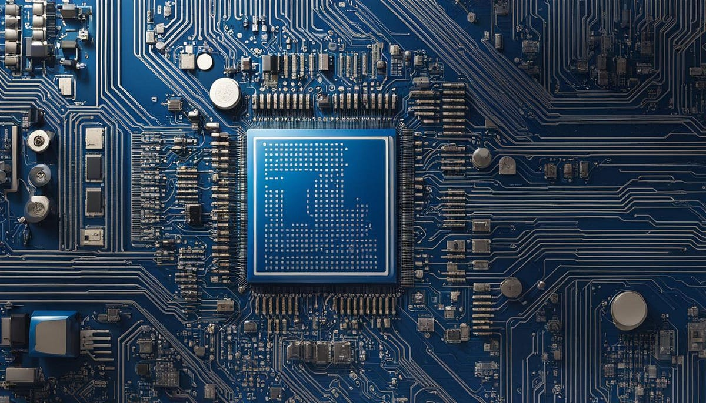
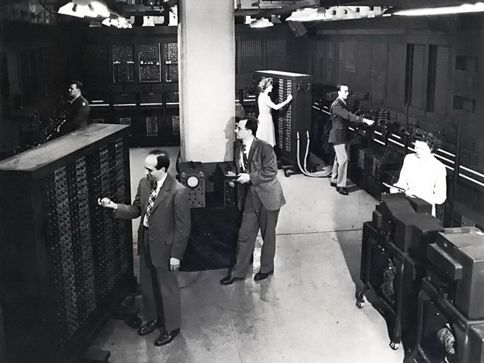
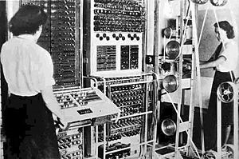
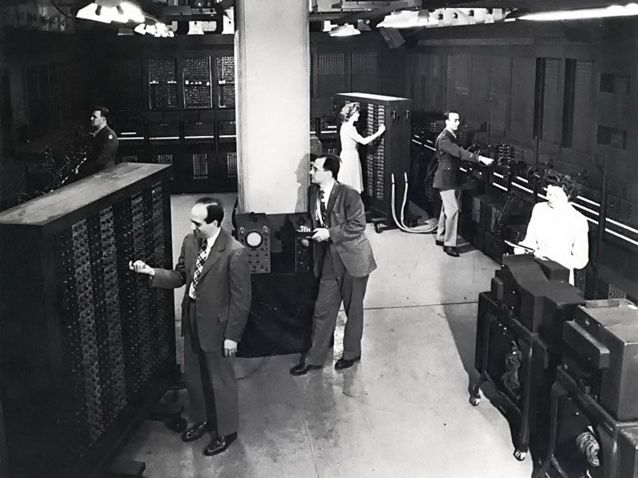
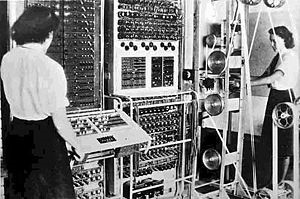
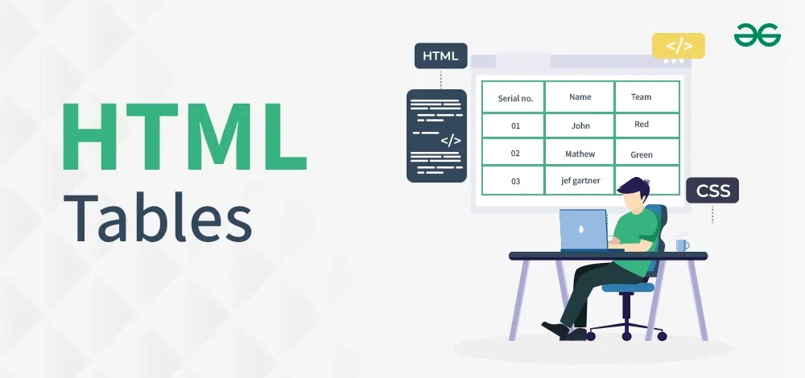

History of the Computer
In The Beginning ...
The history of computers starts out about 2000 years ago, with the birth of the abacus. When the beads on the abacus are moved around, according to programming rules memorized by the user, all regular arithmetic problems can be done. In 1671, Gottfried Wilhelm von Leibniz invented a computer that was built in 1694. It could add, and, after changing some things around, multiply. About a century later Thomas of Colmar created the first successful mechanical calculator that could add, subtract, multiply, and divide.

Other Memorable Events …
• In 1812, Babbage realized that many long calculations were really a series of predictable actions that were constantly repeated. He began to design an automatic mechanical calculating machine, which he called a difference engine.
• Herman Hollerith and James Powers made a step towards automated computing with the development of punched cards. Reading errors were reduced dramatically, workflow increased, and stacks of punched cards could be used as memory of almost unlimited size. For more than 50 years, punched card machines did most of the world's first business computing.
• The start of World War II produced a large need for computer capacity. In 1942, John P. Eckert and John W. Mauchly decided to build a high - speed electronic computer to do the job. Known as ENIAC, this machine could multiply two numbers at a rate of 300 per second.
• Early in the 50's two important engineering discoveries changed the image of the computer field - Magnetic Core Memory and Transistor - Circuit Elements. These technical discoveries quickly found their way into computers. Such computers were mostly found in large computer centers operated by industry, government, and private laboratories.
• In the 1960's, efforts to design and develop the fastest possible computer with the greatest capacity reached a turning point with the Stretch computer by IBM. Stretch was made with the fastest access time, and total capacity in the vicinity of 100,000,000 words.
• Many companies, some new to the computer field, introduced programmable minicomputers supplied with software packages in the 1970’s. The "shrinking" trend continued with the introduction of personal computers (PC's), which are programmable machines small enough and inexpensive enough to be purchased and used by individuals. Many companies, such as Apple Computer and Radio Shack introduced very successful PCs in the 1970’s.
• By the late 1980’s, some personal computers were run by microprocessors that, handling 32 bits of data at a time, could process about 4,000,000 instructions per second.
• Computer networking, e-mail and the Internet, and electronic publishing are just a few of the applications that have grown in recent years. Computers continue to decrease in price, offering the promise that soon, “computers will reside in most homes, offices, and schools”.
Great Computer Quotes ...

“Men are form Mars, Women are from Venus, Computers are from Hell.”
~Author Unknown
“Give a person a fish and you feed them for a day;
teach that person to use the Internet and they won't bother you for weeks.”
~Author Unknown
“To err is human, but to really foul things up requires a computer.”
~Farmer's Almanac, 1972
HISTORICAL COMPUTING EVENTS
- ALAN TURING AND THE TURING MACHINE
- THE LAUNCH OF THE ENIAC COMPUTER
- THE INVENTION OF THE MICROPROCESSOR BY INTEL
ALAN TURING AND THE TURING MACHINE
When did the event/accomplishment happen? 1936 Why was the event or person important? Alan Turing is considered one of the fathers of computer science. His theoretical work laid the foundation for modern computing. What happened, or what did they do? Turing introduced the concept of the Turing Machine, an abstract mathematical device that formalized the idea of computation. This model is foundational to the theory of computation and is used to understand the limits of what can be computed. One interesting fact about the person or event: Turing’s work was pivotal in breaking the Enigma code during World War II, which significantly contributed to the Allied victory.
THE LAUNCH OF THE ENIAC COMPUTER
When did the event/accomplishment happen?1945 Why was the event or person important? The ENIAC (Electronic Numerical Integrator and Computer) was one of the first general-purpose electronic digital computers. Its development marked the beginning of the electronic computing era. What happened, or what did they do? The ENIAC was esigned to solve complex numerical calculations for the U.S. Army during World War II. It could perform thousands of calculations per second, a significant advancement over previous mechanical and electromechanical computers. One interesting fact about the person or event: NIAC was originally designed to compute artillery firing tables and was programmed using plugboards and switches, a method quite different from modern software programming.
THE INVENTION OF THE MICROPROCESSOR BY INTEL
•When did the event/accomplishment happen?1936 Why was the event or person important? Alan Turing is considered one of the fathers of computer science. His theoretical work laid the foundation for modern computing. What happened, or what did they do? Turing introduced the concept of the Turing Machine, an abstract mathematical device that formalized the idea of computation. This model is foundational to the theory of computation and is used to understand the limits of what can be computed. One interesting fact about the person or event: Turing’s work was pivotal in breaking the Enigma code during World War II, which significantly contributed to the Allied victory.



 



New HTML Feature: Table

Tables The 'table' tag, which is one of the key features of HTML, can be used effectively for arranging items into neat table format.
This is perfect for presenting statistics or any other form of organized content. Developers also have access to other tags like
“thead”,“tbody” , and “tfoot” when crafting tables, allowing them to set up tables neatly with headers/footers/bodies.
HTML Table Tags
| Tag | Description |
|---|---|
| table | Defines a table |
| th | Defines a header cell in a table |
| tr | Defines a row in a table |
| td | Defines a cell in a table |
| caption | Defines a table caption |
| colgroup | Specifies a group of one or more columns in a table for formatting |
| col | Specifies column properties for each column within a colgroup element |
| thead | Groups the header content in a table |
| tbody | Groups the body content in a table |
| tfoot | Groups the footer content in a table |
CSS Icons
Icons can easily be added to your HTML page, by using an icon library
How To Add Icons
The simplest way to add an icon to your HTML page, is with an icon library, such as Font Awesome.
Add the name of the specified icon class to any inline HTML element (like "i" or "span").
All the icons in the icon libraries below, are scalable vectors that can be customized with CSS (size, color, shadow, etc.)
Font Awesome Icons
To use the Font Awesome icons, go to fontawesome.com , sign in, and get a code to add in the "head" section of your HTML page
Top of Page